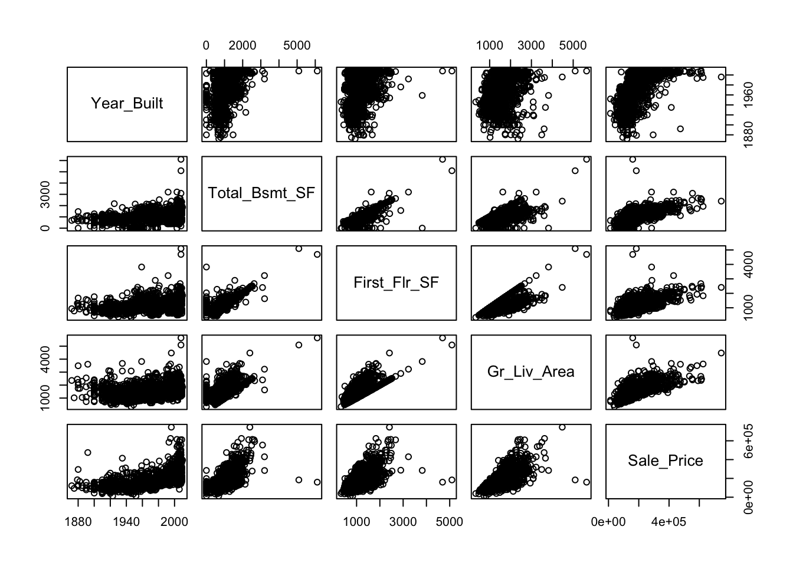

Chapter 2 Introduction to ANOVA and Linear Regression
In this chapter, we introduce one of the most commonly used tools in data science: the linear model. We’ll start with some basic terminology. A linear model is an equation that typically takes the form \[\begin{equation} \mathbf{y} = \beta_0 + \beta_1\mathbf{x_1} + \dots + \beta_k\mathbf{x_k} + \boldsymbol \varepsilon \tag{2.1} \end{equation}\]
The left-hand side of this equation, \(\mathbf{y}\) is equivalently called the target, response, or dependent variable. The right-hand side is a linear combination of the columns \(\{\mathbf{x_i}\}_{i=1}^{k}\) which are commonly referred to as explanatory, input, predictor, or independent variables.
2.1 Prediction vs. Explanation
The purpose of a linear model like Equation (2.1) is generally two-fold:- The model is predictive in that it can estimate the value of \(y\) for a given combination of the \(x\) attributes.
-
The model is explanatory in that it can estimate how \(y\) changes for a unit increase in a given \(x\) attribute, holding all else constant (via the slope parameters \(\beta\)).
However, it’s common for one of these purposes to be more aligned with the specific goals of your project, and it is common to approach the building of such a model differently for each purpose.
In predictive modeling, you are most interested in how much error your model has on holdout data, that is, validation or test data. This is a notion that we introduce next in Section 2.2. If good predictions are all you want from your model, you are unlikely to care if the model satisfies all the assumptions necessary for hypothesis testing; and you are unlikely to care how many variables (including polynomial and interaction terms) are included in the final model.
In explanatory modeling, you foremost want a model that is simple to interpret and doesn’t have too many input variables. It’s common to avoid many polynomial and interaction terms for explanatory models. It’s also imperative that the model fit the statistical assumptions required for inference (hypothesis testing). While the error rates on holdout data will still be useful reporting metrics for explanatory models, it will be more important to craft the model to fit assumptions and ease of interpretation.
2.2 Honest Assessment
When performing predictive or explanatory modeling, we always divide our data into subsets for training, validation, and/or final testing. Because models are prone to discovering small, spurious patterns on the data that is used to create them (the training data), we set aside the validation and testing data to get a clear view of how they might perform on new data that they’ve never seen before. This is a concept that will be revisited several times throughout this text, highlighting its importance to honest assessment of models.
There is no single right answer for how this division should occur for every data set - the answer depends on a multitude of factors that are beyond the scope of our present discussion. Generally speaking, one expects to keep about 70% of the data for model training purposes, and the remaining 30% for validation and testing. These proportions may change depending on the amount and of data available. If one has millions of observations, they can often get away with a much smaller proportion of training data to reduce computation time and increase confidence in validation. If one has substantially fewer observations, it may be necessary to increase the training proportion in order to build a sound model - trading validation confidence for proper training.
Below we demonstrate one technique for separating the data into just two subsets: training and test. These two subsets will suffice for our analyses in this text. We’ll use 70% of our data for the training set and the remainder for testing.
Since we are taking a random sample, each time you run this functions you will get a different result. This can be difficult for team members who wish to keep their analyses in sync. To avoid that variation of results, we can provide a “seed” to the internal random number generation process, which ensures that the randomly generated output is the same to all who use that seed.
The following code demonstrates sampling via the tidyverse. This method requires the use of an id variable. If your data set has a unique identifier built in, you may omit the first line of code (after set.seed()) and use that unique identifier in the third line.
library(tidyverse)
set.seed(123)
ames <- ames %>% mutate(id = row_number())
train <- ames %>% sample_frac(0.7)
test <- anti_join(ames, train, by = 'id')
dim(train)## [1] 2051 82## [1] 879 822.3 Bivariate EDA
As stated in Chapter 1, exploratory data analysis is the foundation of any successful data science project. As we move on to the discussion of modeling, we begin to explore bivariate relationships in our data. In doing so, we will often explore the input variables’ relationships with the target. Such exploration should only be done on the training data; we should never let insights from the validation or training data inform our decisions about modeling.
Bivariate exploratory analysis is often used to assess relationships between two variables. An association or relationship exists when the expected value of one variable changes at different levels of the other variable. A linear relationship between two continuous variables can be inferred when the general shape of a scatter plot of the two variables is a straight line.
2.3.1 Continuous-Continuous Associations
Let’s conduct a preliminary assessment of the relationship between the size of the house in square feet (via Gr_Liv_Area) and the Sale_Price by creating a scatter plot. Note that we call this a preliminary assessment because we should not declare a statistical relationship without a formal hypothesis test (see Section 2.6).
ggplot(data = train) +
geom_point(mapping = aes(x = Gr_Liv_Area, y = Sale_Price/1000)) +
labs(y = "Sales Price (Thousands $)", x = "Greater Living Area (Sqft)")
Figure 2.1: Scatter plot demonstrating a positive linear relationship
2.3.2 Continuous-Categorical Associations
We’ll also revisit the plots that we created in Section 1.1, this time being careful to use only our training data since our goal is eventually to use a linear model to predict Sale_Price.
We start by exploring the relationship between the external quality rating of the home (via the ordinal variable Exter_Qual and the Sale_Price).
The simplest graphic we may wish to create is a bar chart like Figure 2.2 that shows the average sale price of homes with each value of exterior quality.
ggplot(train) +
geom_bar(aes(x=Exter_Qual,y= Sale_Price),
position = "dodge", stat = "summary", fun = "mean") +
scale_y_continuous(labels = function(x) format(x, scientific = FALSE)) # Modify formatting of axis
Figure 2.2: Bar Chart Comparing Average Sale Price of Homes with each Level of Exterior Quality
This gives us the idea that there may be an association between these two attributes, but it can be tricky to rely solely on this graph without exploring the overall distribution in sale price for each group. While this chart is great for the purposes of reporting (once we’ve verified the relationship), it’s not the best one for exploratory analysis. The next two charts allow us to have much more information on one graphic.
The frequency histogram in Figure 2.3 allows us to see that much fewer of the homes have a rating of Excellent versus the other tiers, a fact that makes it difficult to compare the distributions. To normalize that quantity and compare the raw probability densities, we can change our axes to density (which is analogous to percentage) and employ a kernel density estimator with the geom_density plot as shown in Figure 2.4. We can then clearly see that as the exterior quality of the home “goes up” (in the ordinal sense, not in the linear sense), the sale price of the home also increases.
ggplot(train,aes(x=Sale_Price/1000, fill=Exter_Qual)) +
geom_histogram(alpha=0.2, position="identity") +
labs(x = "Sales Price (Thousands $)") ## `stat_bin()` using `bins = 30`. Pick better value with `binwidth`.
Figure 2.3: Histogram: Frequency of Sale_Price for varying qualities of home exterior
ggplot(ames,aes(x=Sale_Price/1000, fill=Exter_Qual)) +
geom_density(alpha=0.2, position="identity") +
labs(x = "Sales Price (Thousands $)")
Figure 2.4: Histogram: Density of Sale_Price for varying qualities of home exterior
To further explore the location and spread of the data, we can create box-plots for each group using the following code:
ggplot(data = train, aes(y = Sale_Price/1000, x = `Exter_Qual`, fill = `Exter_Qual`)) +
geom_boxplot() +
labs(y = "Sales Price (Thousands $)", x = "Exterior Quality Category") +
stat_summary(fun = mean, geom = "point", shape = 20, size = 5, color = "red", fill = "red") +
scale_fill_brewer(palette="Blues") + theme_classic() + coord_flip()
Figure 2.5: Box Plots of Sale_Price for each level of Exter_Qual
Notice that we’ve highlighted the mean on each box-plot for the purposes of comparison. We now have a hypothesis that we may want to formally test. After all, it is not good practice to look at Figures 2.4 and 2.5 and declare that a statistical difference exists. While we do, over time, get a feel for which visually apparent relationships turn out to be statistically significant, it’s imperative that we conduct formal testing before declaring such insights to a colleague or stakeholder.
If we want to test whether the Sale_Price is different for the different values of Exter_Qual, we have to reach for the multi-group alternative to the 2-sample t-test. This is called Analysis of Variance, or ANOVA for short.
2.4 One-Way ANOVA
One-way ANOVA aims to determine whether there is a difference in the mean of a continuous attribute across levels of a categorical attribute. Sound like a two-sample t-test? Indeed, it’s the extension of that test to more than two groups. Performing ANOVA with a binary input variable is mathematically identical to the two-sample t-test, as are it’s assumptions:
- The observations are independent
- The model residuals are normally distributed
- The variances for each group are equal
While ANOVA typically refers to a single hypothesis test, it is truly a linear model with dummy variable inputs. Let \(x_a\), \(x_b\), and \(x_c\) be 3 reference-coded dummy variables for an attribute with 4 levels: a, b, c, and d. Note that we only have 3 dummy variables because one gets left out for the reference level, here d. ANOVA will create the following linear model:
\[\begin{equation} y=\beta_0 + \beta_ax_a+\beta_bx_b+\beta_cx_c + \varepsilon \tag{2.2} \end{equation}\]
Now this model is especially easy to digest because \(x_a\), \(x_b\) and \(x_c\) are binary indicator variables that sum to 1 for each observation. That means if \(x_a = 1\) for a given observation then we know that \(x_b\) and \(x_c\) must be 0. The following facts can be easily derived for reference-level coding (they will change for effects-level coding) due to the fact that linear models are designed to predict the conditional expectation of y given x, \(E[y|x]\). Indeed, for this situation where there 4 levels of our categorical input, the ANOVA model will produce up to 4 distinct predictions. The prediction for each group is merely the group mean!-
\(\beta_0\) represents the mean of reference group, group
d. - \(\beta_a, \beta_b, \beta_c\) all represent the difference in the respective group means compared to the reference level. Positive values thus reflect a group mean that is higher than the reference group, and negative values reflect a group mean lower than the reference group.
-
\(\varepsilon\) is called the residual. It is the error between the prediction and the actual response value.
A one-way ANOVA model only contains a single input variable of interest. Equation (2.2), while it has 3 dummy variable inputs, only contains a single nominal attribute. In 3, we will add more inputs to the equation via two-way ANOVA and multivariate regression models.
ANOVA is used to test the following hypothesis:
\[H_0: \beta_a=\beta_b=\beta_c = 0 \quad\text{(i.e. all group means are equal)}\]
\[H_0: \beta_a\neq0\mbox{ or }\beta_b\neq0 \mbox{ or } \beta_c \neq 0 \quad\text{(i.e. at least one is different)}\]
Both the lm() function and the aov() function will provide the p-values to test the hypothesis above, the only difference between the two functions is that lm() will also provide the user with the coefficient of determinination, \(R^2\), which tells you how much of the variation in \(y\) is accounted for by your categorical input.
## Analysis of Variance Table
##
## Response: Sale_Price
## Df Sum Sq Mean Sq F value Pr(>F)
## Exter_Qual 3 6.6913e+12 2.2304e+12 701.83 < 2.2e-16 ***
## Residuals 2047 6.5054e+12 3.1780e+09
## ---
## Signif. codes: 0 '***' 0.001 '**' 0.01 '*' 0.05 '.' 0.1 ' ' 1##
## Call:
## lm(formula = Sale_Price ~ Exter_Qual, data = train)
##
## Residuals:
## Min 1Q Median 3Q Max
## -215904 -32910 -6147 24793 516090
##
## Coefficients:
## Estimate Std. Error t value Pr(>|t|)
## (Intercept) 207785 3176 65.416 < 2e-16 ***
## Exter_Qual.L 215078 8353 25.749 < 2e-16 ***
## Exter_Qual.Q 44553 6353 7.013 3.15e-12 ***
## Exter_Qual.C 6994 3308 2.114 0.0346 *
## ---
## Signif. codes: 0 '***' 0.001 '**' 0.01 '*' 0.05 '.' 0.1 ' ' 1
##
## Residual standard error: 56370 on 2047 degrees of freedom
## Multiple R-squared: 0.507, Adjusted R-squared: 0.5063
## F-statistic: 701.8 on 3 and 2047 DF, p-value: < 2.2e-16# ames_aov <- aov(Sale_Price ~ Exter_Qual, data = train) # Same thing with aov() function instead
# summary(ames_aov) # R-squared not reported here. The p-value for the ANOVA hypothesis that all the groups have the same mean sale price is incredibly small, at \(2.2\times10^{-16}\). This means it is extraordinarily improbable that we would have observed these differences in means, or a more extreme difference, if the population group means were equal. Thus, we reject our null hypothesis and conclude that there is an association between the exterior quality of a home and the price of the home.
We note, based on the \(R^2\) statistics, that the exterior quality rating can account for almost half the variation in sales price! Adjusted \(R^2\) is a statistic that takes into account the number of variables in the model. The difference between \(R^2\) and adjusted \(R^2\) will be more thoroughly discussed in Chapter 3.
We can also confirm what we know about the predictions from ANOVA, that there are only \(k\) unique predictions from an ANOVA with \(k\) groups (the predictions being the group means), using the predict function.
train$pred_anova <- predict(ames_lm, data = train)
train$resid_anova <- resid(ames_lm, data = train)
(model_output = train %>% dplyr::select(Sale_Price, pred_anova, resid_anova))## # A tibble: 2,051 x 3
## Sale_Price pred_anova resid_anova
## <int> <dbl> <dbl>
## 1 232600 228910. 3690.
## 2 166000 228910. -62910.
## 3 170000 142107. 27893.
## 4 252000 228910. 23090.
## 5 134000 142107. -8107.
## 6 164700 228910. -64210.
## 7 193500 142107. 51393.
## 8 118500 142107. -23607.
## 9 94000 142107. -48107.
## 10 111250 142107. -30857.
## # … with 2,041 more rows2.4.1 Testing Assumptions
We can use the default plots from the lm() function to check the normality assumption.

Figure 2.6: Of the 4 default plots from lm(), we are presently interested in the top-right QQ plot that tests our assumption of normally distributed residuals.
In the top-right plot in Figure 2.6 we verify again the approximate normality of sale price. To test for the third assumption of equal variances, we opt for a formal test like Levene’s (which depends on normality and can be found in the car package) or Fligner’s (which does not depend on normality and exists in the stats package). In both cases, the null hypothesis is equal variances:
\[H_0: \sigma_a^2 =\sigma_b^2 =\sigma_c^2 \quad \text{i.e., the groups have equal variance}\]
\[H_a: \text{at least one group's variance is different}\]
library(car)
library(stats)
leveneTest(Sale_Price ~ Exter_Qual, data = train) # Most popular, but depends on Normality## Levene's Test for Homogeneity of Variance (center = median)
## Df F value Pr(>F)
## group 3 76.879 < 2.2e-16 ***
## 2047
## ---
## Signif. codes: 0 '***' 0.001 '**' 0.01 '*' 0.05 '.' 0.1 ' ' 1##
## Fligner-Killeen test of homogeneity of variances
##
## data: Sale_Price by Exter_Qual
## Fligner-Killeen:med chi-squared = 206.26, df = 3, p-value < 2.2e-16And in both cases, we’re forced to reject the null hypothesis of equal variances. A non-parametric version of the ANOVA test, the Kruskal-Wallis test, is more suitable to this particular case. Non-parametric tests do not have the same statistical power to detect differences between groups. Statistical power is the probability of detecting an effect, if there is a true effect present to detect. We should opt for these tests in situations where our data is ordinal or otherwise violates the assumptions of normality or equal variances in ways that cannot be fixed by logarithmic or other similar transformation.
2.4.2 Kruskal-Wallis
The Kruskal-Wallis test, proposed in 1952, is equivalent to a parametric one-way ANOVA where the data values have been replaced with their ranks (i.e. largest value = 1, second largest value = 2, etc.). When the data is not normally distributed but is identically distributed (having the same shape and variance), the Kruskal-Wallis test can be considered a test for differences in medians. If those identical distributions are also symmetric, then Kruskal-Wallis can be interpretted as testing for a difference in means. When the data is not identically distributed, or when the distributions are not symmetric, Kruskal-Wallis is a test of dominance between distributions. Distributional dominance is the notion that one group’s distribution is located at larger values than another, probabilistically speaking. Formally, a random variable A has dominance over random variable B if \(P(A\geq x) \geq P(B\geq x)\) for all \(x\), and for some \(x\), \(P(A> x) > P(B> x)\).
We summarize this information in the following table:
| Conditions |
Interpretation of Significant Kruskal-Wallis Test |
|
Group distributions are identical in shape, variance, and symmetric | Difference in means |
|
Group distributions are identical in shape, variance, but not symmetric | Difference in medians |
|
Group distributions are identical in shape, variance, but not symmetric |
Difference in location. (distributional dominance) |
Implementing the Kruskal-Wallis test in R is simple:
##
## Kruskal-Wallis rank sum test
##
## data: Sale_Price by Exter_Qual
## Kruskal-Wallis chi-squared = 975.98, df = 3, p-value < 2.2e-16Our conclusion would be that the distribution of sale price is different across different levels of exterior quality.
2.5 ANOVA Post-hoc Testing
After performing an ANOVA and learning that there is a difference between the groups of data, our next natural question ought to be which groups of data are different, and how? In order to explore this question, we must first consider the notion of experimentwise error. When conducting multiple hypothesis tests simultaneously, the experimentwise error rate is the proportion of time you expect to make an error in at least one test.
Let’s suppose we are comparing grocery spending on 4 different credit card rewards programs. If we’d like to compare the rewards programs pairwise, that entails 6 different hypothesis tests (each is a two-sample t-test). If we keep a confidence level of \(\alpha = 0.05\) and subsequently view “being wrong in one test” as a random event happening with probability \(p=0.05\) then our probability of being wrong in at least one test out of 6 could be as great as 0.26!
To control this experiment-wise error rate, we must lower our confidence thresholds to account for it. Alternatively, we can view this as an adjustment of our p-values higher while keeping our confidence threshold fixed as usual. This is typically the approach taken, as we prefer to fix our confidence thresholds in accordance with previous literature or industry standards. There are many methods of adjustment that have been proposed over the years for this purpose. Here, we consider two popular methods: Tukey’s test for pairwise comparisons and Dunnett’s test for control group comparisons. If the reader finds themselves in a situation that doesn’t fit the presciption of either of these methods, we suggest looking next at the modified Bonferroni correction or the notion of false discovery rates proposed by Benjamini and Hochberg in 1995.
2.5.1 Tukey-Kramer
If our objective is to compare each group to every other group then Tukey’s test of honest significant differences, also known as the Tukey-Kramer test is probably the most widely-available and popular corrections in practice. However, it should be noted that Tukey’s test should not be used if one does not plan to make all pairwise comparisons. If only a subset of comparisons are of interest to the user (like comparisons only to a control group) then one should opt for the Dunnett or a modified Bonferroni correction.
To employ Tukey’s HSD in R, we must use the aov() function to create our ANOVA object rather than the lm() function. The output of the test shows the difference in means and the p-value for testing the null hypothesis that the means are equal (i.e. that the differences are equal to 0).
ames_aov <- aov(Sale_Price ~ Exter_Qual, data = train)
tukey.ames <- TukeyHSD(ames_aov)
print(tukey.ames)## Tukey multiple comparisons of means
## 95% family-wise confidence level
##
## Fit: aov(formula = Sale_Price ~ Exter_Qual, data = train)
##
## $Exter_Qual
## diff lwr upr p adj
## Typical-Fair 57887.91 30194.31 85581.52 5e-07
## Good-Fair 144690.25 116739.87 172640.63 0e+00
## Excellent-Fair 291684.79 259752.41 323617.16 0e+00
## Good-Typical 86802.34 79910.03 93694.64 0e+00
## Excellent-Typical 233796.87 216886.62 250707.12 0e+00
## Excellent-Good 146994.54 129666.98 164322.10 0e+00
Figure 2.7: Confidence intervals for mean differences adjusted via Tukey-Kramer
The p-values in this table have been adjusted higher to account for the possible experimentwise error rate. For every pairwise comparison shown, we reject the null hypothesis and conclude that the mean sales price of the homes is different for each level of Exter_Qual. Furthermore, Figure 2.7 shows us experiment-wise (family-wise) adjusted confidence intervals for the differences in means for each pair. The plot option las=1 guides the axis labels. Type ?par for a list of plot options for base R, including an explanation of las.
2.5.2 Dunnett’s Test
If the plan is to make fewer comparisons, specifically just \(k-1\) comparisons where \(k\) is the number of groups in your data (indicating you plan to compare all the groups to one specific group, usually the control group), then Dunnett’s test would be preferrable to the Tukey-Kramer test. If all pairwise comparisons are not made, the Tukey-Kramer test is overly conservative, creating a confidence level that is much lower than specified by the user. Dunnett’s test factors in fewer comparisons and thus should not be used for tests of all pairwise comparisons.
To use Dunnett’s test, we must add the DescTools package to our library. The control group to which all other groups will be compared is designated by the control= option.
##
## Dunnett's test for comparing several treatments with a control :
## 95% family-wise confidence level
##
## $Typical
## diff lwr.ci upr.ci pval
## Fair-Typical -57887.91 -83628.55 -32147.28 2.6e-07 ***
## Good-Typical 86802.34 80396.08 93208.59 < 2e-16 ***
## Excellent-Typical 233796.87 218079.15 249514.60 < 2e-16 ***
##
## ---
## Signif. codes: 0 '***' 0.001 '**' 0.01 '*' 0.05 '.' 0.1 ' ' 1In the output from Dunnett’s test, we notice the p-value comparing Fair to Typical exterior qualities is lower than it was in the Tukey-Kramer test. This is consistent with our expectations for a test that isn’t controlling for as many comparisons; it makes a smaller upward adjustment of p-values to satisfy a given experiment-wise error rate.
2.6 Pearson Correlation
ANOVA is used to formally test the relationship between a categorical variable and a continuous variable. To formally test the (linear) relationship between two continuous attributes, we introduce Pearson correlation, commonly referred to as simply correlation. Correlation is a number between -1 and 1 which measures the strength of a linear relationship between two continuous attributes.
Negative values of correlation indicate a negative linear relationship, meaning that as one of the variables increases, the other tends to decrease. Similarly, positive values of correlation indicate a positive linear relationship meaning that as one of the variables increases, the other tends to increase. Absolute values of correlation equal to 1 indicate a perfect linear relationship. For example, if our data had a column for “mile time in minutes” and a column for “mile time in seconds”, these two columns would have a correlation of 1 due to the fact that there are 60 seconds in a minute. A correlation value near 0 indicates that the variables have no linear relationship.
It’s important to emphasize that Pearson correlation is only designed to detect linear associations between variables. Even when a correlation between two variables is 0, the two variables may still have a very clear association, whether it be quadratic, cyclical, or some other nonlinear pattern of association. Figure 2.8 illustrates all of these statements. On top of each scatter plot, the correlation coefficient is shown. The middle row of this figure aims to illustrate that a perfect correlation has nothing to do with the magnitude or slope of the relationship. In the center image, middle row, we note that the correlation is undefined for any pair that includes a constant variable. In that image, the value of \(y\) is constant across the sample. Equation (2.3) makes this mathematically clear.

Figure 2.8: Examples of relationships and their associated correlations
The population correlation parameter is denoted \(\rho\) and estimated by the sample correlation, denoted as \(r\). The formula for the sample correlation between columns of data \(\mathbf{x}\) and \(\mathbf{y}\) is
\[\begin{equation} r = \frac{\sum_{i=1}^n (x_i-\bar{x})(y_i-\bar{x})}{\sqrt{\sum_{i=1}^n (x_i-\bar{x})^2\sum_{i=1}^n(y_i-\bar{x})^2}}. \tag{2.3} \end{equation}\]
Note that with centered variable vectors \(\mathbf{x_c}\) and \(\mathbf{y_c}\) this formula becomes much cleaner with linear algebra notation:
\[\begin{equation} r = \frac{\mathbf{x_c}^T\mathbf{y_c}}{\|\mathbf{x_c}\|\|\mathbf{y_c}\|}. \tag{2.4} \end{equation}\]
It is interesting to note that Equation (2.4) is identical to the formula for the cosine of the angle between to vectors. While this geometrical relationship does not benefit our intuition1, it is noteworthy nonetheless.
Pearson’s correlation can be calculated in R with the built in cor() function, with the two continuous variables as input:
## [1] 0.6985092.6.1 Statistical Test
To test the statistical significance of correlation, we use a t-test with the null hypothesis that the correlation is equal to 0:
\[H_0: \rho = 0\]
\[H_a: \rho \neq 0\]
If we can reject the null hypothesis, then we declare a significant linear association between the two variables. The cor.test() function in R will perform the test:
##
## Pearson's product-moment correlation
##
## data: x and y
## t = 44.185, df = 2049, p-value < 2.2e-16
## alternative hypothesis: true correlation is not equal to 0
## 95 percent confidence interval:
## 0.6756538 0.7200229
## sample estimates:
## cor
## 0.698509We conclude that Gr_Liv_Area has a linear association with Sale_Price.
It must be noted that this t-test for Pearson’s correlation is not free from assumptions. In fact, there are 4 assumptions that must be met, and they are detailed in Section 2.7.1.
2.6.2 Effect of Anomalous Observations
One final nuance that is important to note is the effect of anomalous observations on correlation. In Figure 2.9 we display 30 random 2-dimensional data points \((x,y)\) with no linear relationship.

Figure 2.9: The variables x and y have no correlation
The correlation is not exactly zero (we wouldn’t expect perfection from random data) but it is very close at 0.002.
##
## Pearson's product-moment correlation
##
## data: x and y
## t = 0.012045, df = 28, p-value = 0.9905
## alternative hypothesis: true correlation is not equal to 0
## 95 percent confidence interval:
## -0.3582868 0.3622484
## sample estimates:
## cor
## 0.002276214Next, we’ll add a single anomalous observation to our data and see how it affects both the correlation value and the correlation test.
##
## Pearson's product-moment correlation
##
## data: x and y
## t = 5.803, df = 29, p-value = 2.738e-06
## alternative hypothesis: true correlation is not equal to 0
## 95 percent confidence interval:
## 0.5115236 0.8631548
## sample estimates:
## cor
## 0.7330043The correlation jumps to 0.73 from 0.002 and is declared strongly significant! Figure 2.10 illustrates the new data. This simple example shows why exploratory data analysis is so important! If we don’t explore our data and detect anomalous observations, we might improperly declare relationships are significant when they are driven by a single observation or a small handful of observations.

Figure 2.10: A single anomalous observation creates strong correlation (0.73) where there previously was none
2.6.3 The Correlation Matrix
It’s common to consider and calculate all pairwise correlations between variables in a dataset. If many attributes share a high degree of mutual correlation, this can cause problems for regression as will be discussed in Chapter ??. The pairwise correlations are generally arranged in an array called the correlation matrix, where the \((i,j)^{th}\) entry is the correlation between the \(i^{th}\) variable and \(j^{th}\) variable in your list. To compute the correlation matrix, we again use the cor() function.
## Year_Built Total_Bsmt_SF First_Flr_SF Gr_Liv_Area Sale_Price
## Year_Built 1.0000000 0.4037104 0.3095407 0.2454325 0.5668889
## Total_Bsmt_SF 0.4037104 1.0000000 0.8120419 0.4643838 0.6276502
## First_Flr_SF 0.3095407 0.8120419 1.0000000 0.5707205 0.6085229
## Gr_Liv_Area 0.2454325 0.4643838 0.5707205 1.0000000 0.6985090
## Sale_Price 0.5668889 0.6276502 0.6085229 0.6985090 1.0000000Not surprisingly, we see strong positive correlation between the square footage of the basement and that of the first floor, and also between all of the area variables and the sale price. As demonstrated by Figures 2.8 and 2.10, raw correlation values can be misleading and it’s unwise to calculate them without a scatter plot for context. The pairs() function in base R provides a simple matrix of scatterplots for this purpose.

2.7 Simple Linear Regression
After learning that two variables share a linear relationship, the next question is natural: what is that relationship? How much should we expect one variable to change as the other changes by a single unit? Simple linear regression answers this question by creating a linear equation that best represents the relationship in the sense that it minimizes the squared error between the observed data and the model predictions (i.e. the sum of the squared residuals). The simple linear regression equation is typically written \[\begin{equation} y=\beta_0 + \beta_1x + \varepsilon \tag{2.5} \end{equation}\] where \(\beta_0\), the intercept, gives the expected value of \(y\) when \(x=0\) and \(\beta_1\), the slope gives the expected change in \(y\) for a one-unit increase in \(x\). The residual, \(\varepsilon\) is the error between our predicted value, \(\hat{y}=\beta_0 + \beta_1x\) and our actual value \(y\). Ordinary Least Squares seeks to minimize the sum of squared residuals, or sum of squared error. That objective is known as a loss function. The sum of squared error (SSE) or equivalently the mean squared error (MSE) loss functions are by far the most popular loss functions for continuous prediction problems. In regression, it is this loss function that provides us with the theory that ensures our predictions are the (conditional) expected values of \(y\), given the input data \(x\) (\(E(y|x)\)).
We should note that SSE is not the only loss function at our disposal. Minimizing the mean absolute error (MAE) is common in situations with a highly skewed response variable (squaring very large errors gives those observations in the tail too much influence on the regression as we will later discuss). Using MAE to drive our loss function gives us predictions that are conditional medians of the response, given the input data. Other loss functions, like Huber’s M function, are also used to handle problems with influential observations as discussed in Chapter 5.
As we mentioned in Section 2.1, a simple linear regression serves two purposes:- to predict the expected value of \(y\) for each value of \(x\) and
- to explain how \(y\) is expected to change for a unit change in \(x\).
In order to accurately use a regression for the second purpose, however, we must first meet some strict assumptions with our data.
2.7.1 Assumptions of Linear Regression
Linear regression, in particular the hypothesis tests that are generally performed as part of linear regression, has 4 assumptions:
- The expected value of \(y\) is linear in \(x\) (proper model specification).
- The random errors are independent.
- The random errors are normally distributed.
- The random errors have equal variance (homoskedasticity).
It must now be noted that these assumptions are also in effect for the test of Pearson’s correlation in Section 2.6.1, because the tests in simple linear regression are mathematically equivalent to that test. When these assumptions are not met, another approach to testing the significance of a linear relationship should be considered. The most common non-parametric approach to testing for an association between two continuous variables is Spearman’s correlation. Spearman’s correlation does not limit its findings to linear relationships; any monotonic relationship (one that is always increasing or always decreasing) will cause Spearman’s correlation to be significant. Similar to the approach taken by Kruskal-Wallis, Spearman’s correlation replaces the data with its ranks and computes Pearson’s correlation on the ranks. The same cor and cor.test() functions can be used; simply specify the method='spearman' option.
## Warning in cor.test.default(x, y, ...): Cannot compute exact p-value with ties##
## Spearman's rank correlation rho
##
## data: x and y
## S = 408364087, p-value < 2.2e-16
## alternative hypothesis: true rho is not equal to 0
## sample estimates:
## rho
## 0.71601072.7.2 Testing for Association
The statistical test of correlation is mathematically equivalent to testing the hypothesis that the slope parameter in Equation (2.5) is zero. This t-test is part of the output from any linear regression function, like lm() which we saw in Section 2.4. Let’s confirm this using the example from the Section 2.6.1 where we investigate the relationship between Gr_Liv_Area and Sale_Price. Again, the t-test in the output tests the following hypothesis:
\[H_0: \beta_1=0\]
\[H_a: \beta_1 \neq 0\]
The first thing we will do after creating the linear model is check our assumption using the default plots from lm() . From these four plots we will be most interested in the first two.
In the top left plot, we are visually checking for homoskedasticity. We’d like to see the variability of the points remain constant from left to right on this chart, indicating that the errors have constant variance for each value of y. We do not want to see any fan shapes in this chart. Unfortunately, we do see just that: the variability of the errors is much smaller for smaller values of Sale Price than it is for larger values of Sale Price.
In the top right plot, we are visually checking for normality of errors. We’d like to see the QQ-plot indicate normality with all the points roughly following the line. Unfortunately, we do not see that here. The errors do not appear to be normally distributed.

Figure 2.11: The variables x and y have no correlation
Despite the violation of assumptions, let’s continue examining the output from this regression in order to practice our interpretation of it.
##
## Call:
## lm(formula = Sale_Price ~ Gr_Liv_Area, data = train)
##
## Residuals:
## Min 1Q Median 3Q Max
## -478762 -30030 -1405 22273 335855
##
## Coefficients:
## Estimate Std. Error t value Pr(>|t|)
## (Intercept) 14045.872 3942.503 3.563 0.000375 ***
## Gr_Liv_Area 110.726 2.506 44.185 < 2e-16 ***
## ---
## Signif. codes: 0 '***' 0.001 '**' 0.01 '*' 0.05 '.' 0.1 ' ' 1
##
## Residual standard error: 57430 on 2049 degrees of freedom
## Multiple R-squared: 0.4879, Adjusted R-squared: 0.4877
## F-statistic: 1952 on 1 and 2049 DF, p-value: < 2.2e-16The first thing we’re likely to examine in the coefficient table is the p-value for Gr_Liv_Area. It is strongly significant (in fact, it’s the same t-value and p-value as we saw for the cor.test as these tests are mathematically equivalent), indicating that there is an association between the size of the home and the sale price. Furthermore, the parameter estimate is 115.5 indicating that we’d expect the price of a home to increase by $115.5 for every additional square foot of living space. Because of the linearity of the model, we can extend this slope estimate to any unit change in \(x\). For example, it might be difficult to think in terms of single square feet when comparing houses, so we might prefer to use a 100 square-foot change and report our conclusion as follows: For each additional 100 square feet of living area, we expect the house price to increase by $11,550.
The n-dimensional “variable vectors” and live in the vast sample space where the \(i^{th}\) axis represents the \(i^th\) observation in your dataset. In this space, a single point/vector is one possible set of sample values of n observations; this space can be difficult to grasp mentally↩